Featured Projects & Apps
Work & Research
Building and evaluating foundation models for robots, from VLAs to WAMs.
Northeastern University

Graduate Teaching Assistant Spring 2025, Spring 2026, Fall 2026
CS5180: Reinforcement Learning and Sequential Decision Making, with Prof. Robert Platt and Prof. Chris Amato.
Khoury Research Apprentice Spring 2025
Fully-funded Master's research on Human-Robot Interaction and Vision-Language-Action modeling at the People and Robot Collaborative Systems (PARCS) Lab, under Prof. Zhi Tan.
General Motors (GM)
Robotics Research & Engineering Intern
Conducted research on bimanual robot manipulation and generalizability of Vision-Language-Action (VLA) models and World-Action-Models (WAMs). Designed and trained advanced learning architectures (diffusion policies, ACT) and multi-modal policy inference pipelines (RGB, depth, proprioception) for sim-to-real adaptation.
Familiar Machines & Magic
Reinforcement Learning Intern
Designed, implemented, and tested learning algorithms to improve autonomous robotic behaviors in real-world environments.
PARCS Lab @ Khoury College of CS
Graduate Research Assistant
Simulated Human-Robot-Interaction models on NVIDIA Isaac Sim to understand how robots join human-human conversations.
Birla Vishvakarma Mahavidyalaya
Junior Research Fellow
Developed a modular control system using OPC-UA for AMRs and workstations, optimizing unmanned assembly lines. Developed AI-driven website for Center of Excellence in Digital Manufacturing. Built an E-commerce platform with Django for institutional sales and inventory management. Mentored 15 interns in Smart Manufacturing Winter Internship 2023-2024.
Indian Space Research Organisation
Researcher
Developed a Deep Neural Network for automated land-use classification of satellite images, and urban planning. Engineered a Digital Twin of a Thermo-Vacuum Chamber with Quantum Payload.
Foundation for Smart Manufacturing - Indian Institute of Technology, Delhi - Automation Industry Association
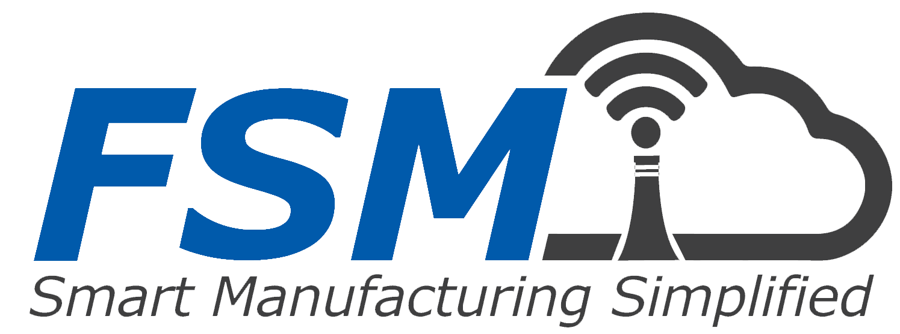
AI/ML Mentor
Led 44 ML/AI research projects under Prof. Dr. Sunil Jha, focusing on LLM and Computer Vision applications in Manufacturing.
Summer 2022 Research Intern
Implemented an ML model using OpenCV for PCB fault detection. Deployed the model to Netlify with a FastAPI interface integrated with YOLOv5 and published these results.
Summer 2021 Research Intern
Researched and implemented a Digital Twin of the Smart Lathe Machine to optimize operations. You can read the technical report here.
Education
Khoury College of Computer Sciences
Master of Science in Robotics (Computer Science)
Grade: 4.0/4.0 GPA
Coursework: Deep Learning, Master's Research, Reinforcement Learning and
Sequential Decision Making, & Mobile Robotics
Birla Vishvakarma Mahavidyalaya
Bachelor of Technology - Mechanical Engineering
Grade: 3.6/4.0 GPA
Activities and societies: The Robotics Society, ABU ROBOCON 2020, GUJCOST
Robofest 2.0
Projects
Things I've built, broken, and fixed. More on GitHub.
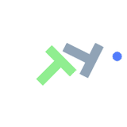
pico-WAM Research
A compact World Action Model for testing how well robots imagine counterfactual futures and plan with them.
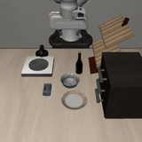
Lost in Instruction: Do VLAs Actually Listen? Research
Swapping, scrambling, and paraphrasing instructions for SmolVLA and OpenVLA on LIBERO. Turns out they track the object and mostly ignore the verb.
somo
Meet iro, a little home robot with emotional intelligence. Say hi, it notices you.
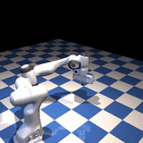
7-DoF Franka SE(3) Inverse Kinematics
Making a Franka trace a helix, and using the spare DoF in the null space to do it more gracefully.
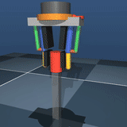
Grasp-and-Twist Underactuated Gripper
One motor, four DoFs: a tendon-driven gripper that grabs first, then twists. Contact mechanics do the switching.
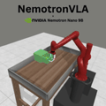
Nemotron-VLA
Open source VLA Model powered by NVIDIA Foundation Models.
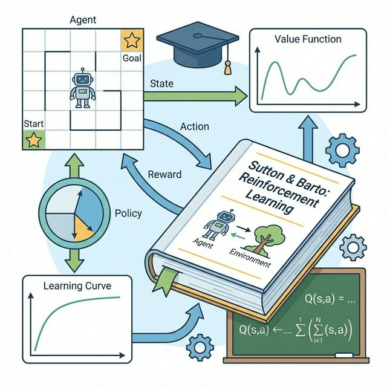
CS5180-RL Educational
Interactive tools to learn Reinforcement Learning concepts from the Sutton & Barto textbook. Developed as a TA for CS5180/4180 at Northeastern University.
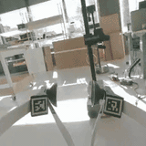
Dexterous Manipulation using Vision-Language-Action Modeling
Deployed dexterous manipulation policies with RL, NLP, and models like Diffusion Policy, π0, ViT-GPT2, VQ-BeT, enhancing VLA models with optimization and learning from demonstrations.
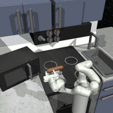
Robotic Arm Manipulation with Behavior Cloning
Enhanced robot arm manipulation using human demonstrations and 3-phase soft actor-critic.
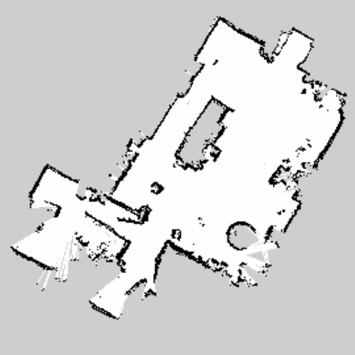
Offline Rao-Blackwellized Particle with Adaptive Sampling
Accurate mapping while reducing particle weight variance to reduce particle depletion.
Show Me Google I/O Hackathon
Point your phone at a broken appliance and a Gemini coach watches your hands and talks you through the fix.
Publications
-
pico-WAM: Evaluating Counterfactual Prediction and Planning Error in a Compact World Action Model
arXiv preprint, 2026 · Paper · Code · Project page -
A comprehensive overview of artificial intelligence applications in basketball
Journal of Physical Education and Sport (JPES), 2024 -
Automating Customer Service using LangChain
arXiv preprint, 2023 -
Application of digital twin in space engineering using AR and IoT technology
Current Science, 2023 -
Bare PCB Fault Detection in Real-time Using YOLOv5
IJCSMC, 2022
All publications/patents at Google Scholar.
Talks
Presented thoughts at podcasts, conferences, workshops, and seminars.
Writings on AI, robotics, and technology.
-
Building Vision-Language-Action Model from scratch (Basics)
Understand what are VLAs? How to build VLAs from scratch?! -
Building VLA models from scratch -- II
Math, Code, Implementation and Design Decisions. -
Upgrading mini-VLA with CLIP/SigLIP vision encoders
How to upgrade vision tokens without rewiring entire system. -
ROS2
Kwiki
Learn ROS2 Humble. I cover setup, Basics, Nodes & Services, Nav2, Moveit2, SLAM, and more.
Achievements
-
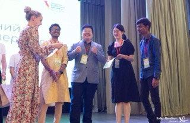
Best Project Award
Ural Federal University, Ekaterinburg, Russia · Overall and International Category
-
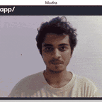
First Place Overall, Wolfram Award & Best Social Hack
MakeUC 2021, by IEEE @ University of Cincinnati, USA
-
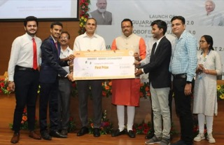
Winner of ROBOFEST 2.0
GUJCOST & DST, India · Prosthetic Limb with Remote Sensors
-
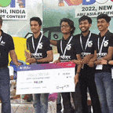
Abdul Kalam Award
Best New Team at DD ROBOCON 2022 · Featured on national TV (DoorDarshan)
-
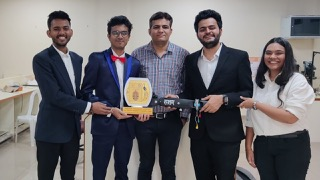
Gaurav Puraskar, twice
Highest civilian award for distinguished students of Vallabh Vidyanagar, Gujarat · 2022 (MakeUC 2021) and 2023 (ROBOFEST 2.0 & DD ROBOCON 2022)
-
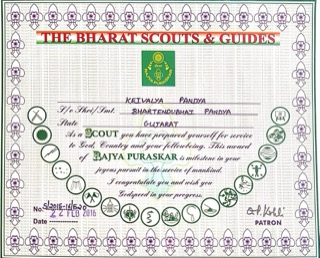
Rajya Puraskar Recipient
Bharat Scouts and Guides · Presented by former Governor, late Om Prakash Kohli
-
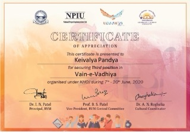
2nd Runner Up, Khoj 2020
Learnt to play the flute (aka bansuri)